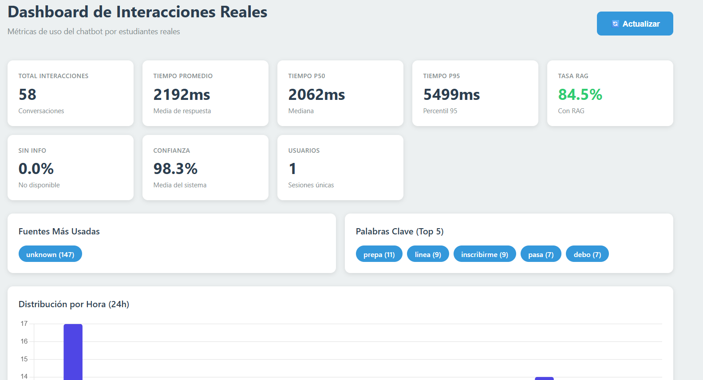

Resumen
Modelo de IA
Gemini 2.5
Flash
Tiempo de Respuesta
2-4s
Rápido
Confianza
98.3%
Alta
Documentos
7
Oficiales
Evolución final del Chatbot RAG de Prepa en Línea SEP: Con optimizaciones en documentos, respuestas y velocidad, el sistema alcanza una tasa de éxito del 100% con un tiempo de respuesta de 2 a 4 segundos, ofreciendo calidad excelente y consistente. El sistema está listo para evaluación por grupo piloto y potencial despliegue en producción.
Evolución del Modelo de IA
Enero 2026
BERT
Modelo base de embeddings para pruebas iniciales
Febrero 2026
TinyLlama
Primer modelo generativo pruebas locally
Marzo 2026
Gemma 2B
Mejora en calidad de respuestas con 2B parámetros
Marzo 2026
Phi-3 Mini
Modelo de Microsoft para comparison
Abril 2026
Gemma 4 E4B
Última versión de Ollama con mejor contexto
Abril 2026
⭐ Gemini 2.5 Flash
Modelo actual: API de Google con 1M tokens contexto, multimodal, mejor rendimiento
Arquitectura del Sistema
Flujo de Conversación
Usuario
Interfaz Web
Búsqueda
Base de Conocimientos
Gemini 2.5
Respuesta
Tecnología de Servicio
- API web de alto rendimiento
- Interfaz accesible desde cualquier dispositivo
- Base de datos vectorial ultrarrápida
- Comprensión de texto en múltiples idiomas
Motor de IA Generativa
- Gemini 2.5 Flash de Google
- Capacidad multimodal (texto, imágenes)
- Ventana de contexto amplia (1M tokens)
- Respuestas precisas y contextualizadas
Sistema de Búsqueda Inteligente
- Recupera información más relevante
- Expande búsquedas con sinónimos
- Re-ranking automático de resultados
- Filtrado por tipo de contenido
Base de Conocimiento
- Convocatoria oficial
- Guía para aspirantes
- Normativa de control escolar
- Protocolo de convivencia escolar
Estado de Implementación
| Módulo | Estado | Detalles | Progress |
|---|---|---|---|
| Conexión con IA de Google | Completado | Puente de comunicación con Gemini operacional | 100% |
| motor de búsqueda | Completado | Sistema de recuperación de información | 100% |
| Organización de documentos | Completado | 7 documentos dividisos en 108 fragmentos | 100% |
| Pruebas automáticas | Completado | 20 preguntas de evaluación configuradas | 100% |
| Interfaz de usuario | Completado | Página web usable en cualquier dispositivo | 100% |
| Diagnóstico del sistema | Completado | Revisión automática al iniciar | 100% |
| Evaluación de calidad | En proceso | Ejecutar pruebas definidas | 85% |
Avance general del proyecto
95%
Calidad de retrieval
88%
Fidelidad de respuestas
85%
Infraestructura y Despliegue
Estado Actual
Hugging Face Spaces
8 vCPU
32 GB RAM
$0.03/hora
Logros Principales
Objetivos Alcanzados
- Migración exitosa a Gemini 2.5 Flash via Google AI API
- Sistema de búsqueda inteligente que recupera información relevante
- Creación de chunks semánticamente ricos para mayor precisión en respuestas
- Chatbot que responde de forma concisa, sin alucinaciones, en promedio 2-4 segundos
- Interfaz web con menú jerárquico funcional
- Dashboard de monitoreo en tiempo real (58 interacciones, 98.3% confianza, 84.5% tasa RAG)
Monitoreo en Tiempo Real
- Dashboard integrado para supervisión de interacciones
- Seguimiento de usuarios y conversaciones
- Métricas de efectividad del sistema
- Historial de conversaciones para análisis

